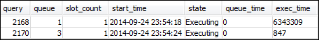
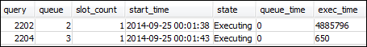
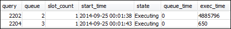

Sección 3: Direccionamiento de consultas a las colas en función de los grupos de usuarios y de consultas
Ahora tiene el clúster asociado un grupo de parámetros nuevo y ha configurado WLM. A continuación, ejecute algunas consultas para ver cómo Amazon Redshift dirige las consultas a las colas para su procesamiento.
Paso 1: Vista de la configuración de la cola de consultas en la base de datos
Primero, verifique que la base de datos tenga la configuración WLM que espera.
Para ver la configuración de la cola de consultas
-
Abra RSQL y ejecute la siguiente consulta. La consulta utiliza la vista WLM_QUEUE_STATE_VW que el usuario creó en Paso 1: Creación de la vista WLM_QUEUE_STATE_VW. Si ya tenía una sesión conectada a la base de datos antes de reiniciar el clúster, deberá volver a conectarla.
select * from wlm_queue_state_vw;A continuación se muestra un resultado de ejemplo.

Compare estos resultados con los resultados recibidos en Paso 1: Creación de la vista WLM_QUEUE_STATE_VW. Observe que ahora hay dos colas adicionales. La cola 1 ahora es la cola para el grupo de consultas de prueba y la cola 2 es la cola para el grupo del usuario administrador.
La cola 3 ahora es la cola predeterminada. La última cola de la lista siempre es la cola predeterminada. Esa es la cola a la que se dirigen las consultas de forma predeterminada si no se especifica ningún grupo de usuarios o de consultas en una consulta.
-
Ejecute la siguiente consulta para confirmar que la consulta ahora se ejecuta en la cola 3.
select * from wlm_query_state_vw;A continuación se muestra un resultado de ejemplo.

Paso 2: Ejecución de una consulta mediante la cola de grupo de consultas
Para ejecutar una consulta mediante la cola de grupo de consultas
-
Ejecute la siguiente consulta para dirigirla al grupo de consultas
test.set query_group to test; select avg(l.priceperticket*s.qtysold) from listing l, sales s where l.listid <40000; -
Desde la otra ventana RSQL, ejecute la siguiente consulta.
select * from wlm_query_state_vw;A continuación se muestra un resultado de ejemplo.
La consulta se dirigió al grupo de consultas de prueba, que ahora es la cola 1.
-
Seleccione todos los elementos de la vista de estado de la cola.
select * from wlm_queue_state_vw;Se ve un resultado similar al siguiente.

-
Ahora, restablezca el grupo de consultas y vuelva a ejecutar la consulta larga:
reset query_group; select avg(l.priceperticket*s.qtysold) from listing l, sales s where l.listid <40000; -
Ejecute las consultas en las vistas para ver los resultados.
select * from wlm_queue_state_vw; select * from wlm_query_state_vw;A continuación se incluyen resultados de ejemplo.


El resultado debe ser que la consulta ahora se ejecute en la cola 3 nuevamente.
Paso 3: Creación de un usuario y un grupo de base de datos
Antes de poder ejecutar cualquier consulta en esta cola, debe crear el grupo de usuarios en la base de datos y agregar un usuario al grupo. A continuación, inicie sesión con RSQL con las nuevas credenciales de usuario y ejecute las consultas. Debe ejecutar las consultas como superusuario, como por ejemplo, usuario administrador, para crear usuarios de bases de datos.
Para crear un usuario y un grupo de usuarios de base de datos nuevos
-
En la base de datos, cree un usuario de base de datos nuevo denominado
adminwlmmediante la ejecución del siguiente comando en una ventana RSQL.create user adminwlm createuser password '123Admin'; -
Luego, ejecute los siguientes comandos para crear un nuevo grupo de usuarios y agregue el nuevo usuario
adminwlma él.create group admin; alter group admin add user adminwlm;
Paso 4: Ejecución de una consulta mediante la cola de grupo de usuarios
A continuación, ejecuta una consulta y la dirige a la cola de grupo de usuarios. Esto se hace cuando desea dirigir la consulta a una cola que esté configurada para administrar el tipo de consulta que desea ejecutar.
Para ejecutar una consulta mediante la cola de grupo de usuarios
-
En la ventana RSQL 2, ejecute las siguientes consultas para cambiar a la cuenta
adminwlmy ejecute una consulta como ese usuario.set session authorization 'adminwlm'; select avg(l.priceperticket*s.qtysold) from listing l, sales s where l.listid <40000; -
En la ventana RSQL 1, ejecute la siguiente consulta para ver la cola de consultas a la que se dirigen las consultas.
select * from wlm_query_state_vw; select * from wlm_queue_state_vw;A continuación se incluyen resultados de ejemplo.
 
La cola en la que se ejecuta esta consulta es la cola 2, la cola de usuario
admin. Cada vez que inicie sesión como este usuario y ejecute consultas, estas se ejecutan en la cola 2 a menos que especifique otro grupo de consultas para utilizar. La cola elegida depende de las reglas de asignación de colas. Para obtener más información, consulte Reglas de asignación de colas de WLM. -
Ahora ejecute la siguiente consulta desde la ventana RSQL 2.
set query_group to test; select avg(l.priceperticket*s.qtysold) from listing l, sales s where l.listid <40000; -
En la ventana RSQL 1, ejecute la siguiente consulta para ver la cola de consultas a la que se dirigen las consultas.
select * from wlm_queue_state_vw; select * from wlm_query_state_vw;A continuación se incluyen resultados de ejemplo.


-
Cuando haya terminado, restablezca el grupo de consultas.
reset query_group;